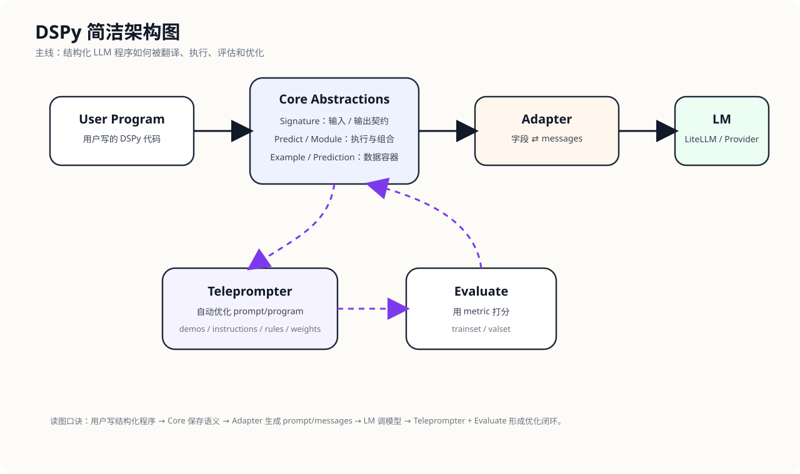
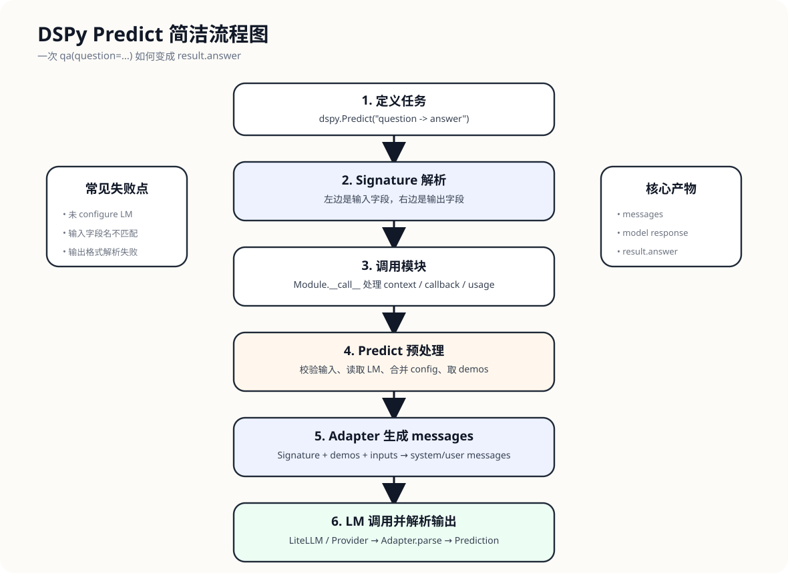
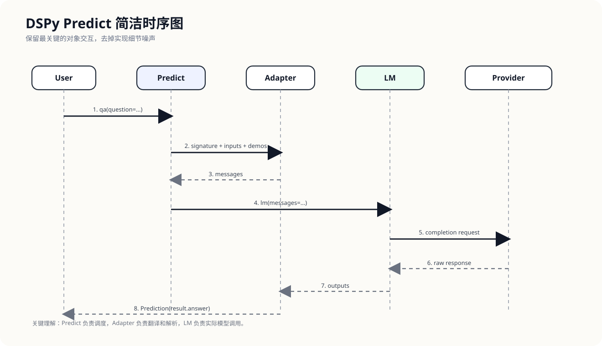
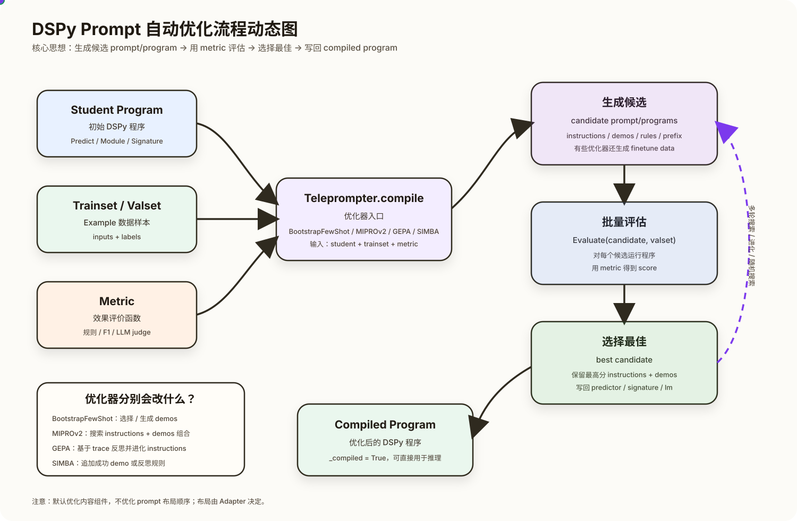

01 项目速览
先建立全局认知：DSPy 是什么、解决什么问题、为什么值得学。
项目名称
DSPy
项目定位
用于编程、组合、评估和优化语言模型程序的 Python 框架。
技术栈
Python 3.10+、Pydantic、LiteLLM、pytest、ruff、diskcache、GEPA。
主要用户
LLM 应用工程师、RAG/Agent 开发者、prompt optimization 研究者、希望把 prompt 工程系统化的人。
一句话解释
DSPy 让你用 Python 模块来写 LLM 程序，再用优化器自动改进 instructions、few-shot 示例、规则甚至模型权重。
核心价值
- 把 prompt 从脆弱字符串提升为可组合、可测试、可优化的程序结构。
- 通过 Signature 明确输入输出边界，通过 Module 组合复杂流程。
- 通过 Teleprompter 把 prompt engineering 变成基于数据和 metric 的搜索问题。
- 通过 Adapter 把结构化任务翻译成模型可理解的 messages，并把模型输出解析回结构化对象。
02 核心概念解释
用简单语言解释 DSPy 的核心概念和模块关系。
生活类比：AI 流水线工厂
| 现实类比 | DSPy 概念 | 一句话解释 |
|---|---|---|
| 产品规格说明书 | Signature | 规定任务有哪些输入栏、输出栏。 |
| 工位上的工人 | Predict / ChainOfThought / ReAct | 按任务规格执行一次或一组模型调用。 |
| 装配线 | Module | 把多个工位组合成完整 AI 程序。 |
| 外包工厂 | LM / Provider | 真正产生语言输出的模型服务。 |
| 翻译官 | Adapter | 把结构化字段翻译成 prompt/messages，再把回答解析回来。 |
| 生产优化顾问 | Teleprompter | 用数据和评估自动挑示例、改说明、归纳规则。 |
| 质检员 | Evaluate / metric | 判断某个程序版本效果是否更好。 |
不用术语的解释
DSPy 不是让你手写一大段 prompt，而是先把任务拆成“输入是什么、输出是什么、处理模块是什么、用什么标准算好”。然后它把这些结构自动翻译成模型能读懂的消息。如果你提供训练样本和评价函数，DSPy 还能自动尝试不同说明和示例组合，选出效果更好的版本。
03 跑通项目
从“看项目”进入“用项目”。
安装方式
pip install dspy本地开发依赖
仓库使用 pyproject.toml 管理包元信息与依赖，要求 Python >=3.10, <3.15。开发依赖包括 pytest、ruff、pre-commit 等。
最小可运行示例
import dspy
lm = dspy.LM("openai/gpt-4o-mini")
dspy.configure(lm=lm)
qa = dspy.Predict("question -> answer")
result = qa(question="What is DSPy?")
print(result.answer)运行成功标准
- 已通过
dspy.configure(lm=...)配置语言模型。 Predict调用返回Prediction对象。- 可以通过
result.answer访问结构化输出字段。
常见报错
- 未配置 LM：
No LM is loaded。 - 把 LM 配成字符串：应该用
dspy.LM("provider/model")，不是直接传字符串。 - 输入字段名和 Signature 不一致：多余字段会被忽略，缺字段会 warning。
04 项目地图
理解目录边界和关键文件。
| 目录 / 文件 | 职责 | 学习顺序 |
|---|---|---|
dspy/__init__.py | 顶层 API 汇总，用户 import dspy 后能直接访问核心类。 | 第 1 个看，建立 API 地图。 |
dspy/signatures/ | 定义任务输入输出契约，支持字符串签名和类签名。 | 第 2 个看。 |
dspy/predict/ | Predict、ChainOfThought、ReAct 等执行模块。 | 第 3 个看。 |
dspy/primitives/ | Module、Example、Prediction 等基础数据结构。 | 第 4 个看。 |
dspy/adapters/ | 结构化任务和模型 messages 之间的双向转换。 | 理解 prompt 生成时看。 |
dspy/clients/ | LM、BaseLM、cache、provider，负责实际模型调用。 | 理解模型请求时看。 |
dspy/teleprompt/ | Prompt/program 优化器，包含 BootstrapFewShot、MIPROv2、GEPA 等。 | 理解自动优化时看。 |
dspy/evaluate/ | 程序评估与指标。 | 理解 optimizer 评分时看。 |
tests/ | 按模块组织的测试，是补洞和验证行为的好入口。 | 遇到不确定行为时看。 |
05 架构图
DSPy 的整体结构：用户代码、核心抽象、模型调用、优化评估之间的关系。

核心主线是 Signature → Predict/Module → Adapter → LM → Provider。旁路能力包括 Teleprompter 做优化、Evaluate 做评估、Retrievers 支持 RAG。
06 流程图
一次 dspy.Predict 调用如何从输入走到结构化输出。

这条链路的关键判断点是：是否有 LM、输入字段是否匹配 Signature、使用什么 Adapter、模型类型是 chat/text/responses、是否启用 cache。
07 时序图
对象之间按时间顺序如何协作。

一次调用中，用户先配置 Settings，创建 Predict，调用时进入 Module.__call__，随后由 Adapter 构造消息，LM 经 LiteLLM 调 provider，最后解析为 Prediction。
08 源码追踪
围绕一条主链路读源码：qa = dspy.Predict("question -> answer") 与 qa(question="...")。
主调用链
Predict.__init__
-> ensure_signature
-> Signature / make_signature / _parse_signature
Predict.__call__
-> Module.__call__
-> Predict.forward
-> Predict._forward_preprocess
-> ChatAdapter.__call__
-> Adapter.__call__
-> Adapter.format
-> BaseLM.__call__
-> LM.forward
-> BaseLM._process_lm_response
-> Adapter._call_postprocess
-> ChatAdapter.parse
-> Prediction.from_completions| 文件路径 | 关键类 / 函数 | 职责 | 学习结论 |
|---|---|---|---|
dspy/predict/predict.py:58 | Predict.__init__ | 接收字符串或 Signature 类，调用 ensure_signature 建立任务契约。 | Predict 创建时并不调模型，只保存任务结构和配置。 |
dspy/signatures/signature.py:519 | ensure_signature | 判断签名是字符串还是已有 Signature 类。 | 字符串签名最终会动态生成 Signature 子类。 |
dspy/signatures/signature.py:615 | _parse_signature | 按 -> 切分输入和输出，左边变 InputField，右边变 OutputField。 | Signature 的本质是输入输出字段契约。 |
dspy/signatures/signature.py:641 | _parse_field_string | 把字段串伪装成 Python 函数参数，用 AST 解析字段名和类型。 | 未写类型时默认 str。 |
dspy/primitives/module.py:93 | Module.__call__ | 统一模块调用入口，处理上下文、callback、usage tracking。 | 所有 DSPy 模块都有统一运行机制。 |
dspy/predict/predict.py:138 | _forward_preprocess | 合并 config、读取 LM、校验输入字段和类型。 | 这里决定本次调用用哪个 LM、哪个 Signature、哪些 demos。 |
dspy/adapters/base.py:177 | Adapter.__call__ | 完成 preprocess → format → lm → postprocess。 | Adapter 是结构化程序和 prompt/messages 之间的翻译层。 |
dspy/adapters/base.py:222 | Adapter.format | 生成 system message、few-shot messages、当前 user message。 | prompt 的布局主要由 Adapter 决定。 |
dspy/adapters/chat_adapter.py:210 | ChatAdapter.parse | 用 [[ ## field ## ]] 标记解析输出字段。 | 模型必须按字段格式输出，DSPy 才能解析成结构化结果。 |
dspy/clients/base_lm.py:121 | BaseLM.__call__ | 调用 forward 并处理模型响应。 | LM 子类只需实现 forward。 |
dspy/clients/lm.py:159 | LM.forward | 合并参数、选择 chat/text/responses completion、处理 cache/retry、调用 LiteLLM。 | 真正模型请求在这里发生。 |
dspy/primitives/example.py:3 | Example | 字段化数据容器，支持 dict 和点号访问。 | Example 是 train/dev/test 样本、few-shot demos、metric 输入的统一数据行。 |
dspy/primitives/prediction.py:3 | Prediction | 继承 Example，保存模型输出字段与 completions。 | result.answer 来自 Example 的 __getattr__。 |
09 自动化优化 Prompt
DSPy 的优化不是随便改一个 prompt 字符串，而是在固定 Adapter 布局中搜索更好的语义组件。
统一优化框架

student program + trainset + metric
↓
optimizer.compile(...)
↓
compiled program主要优化内容
| Prompt / Program 组件 | 是否优化 | 典型优化器 |
|---|---|---|
| few-shot demos | 会 | LabeledFewShot, BootstrapFewShot, MIPROv2, SIMBA |
| demos 组合 / 选择 | 会 | BootstrapFewShotWithRandomSearch, BootstrapFewShotWithOptuna, MIPROv2 |
| instructions / 任务说明 | 会 | COPRO, MIPROv2, GEPA, InferRules |
| 归纳规则 | 会 | InferRules, SIMBA, GEPA |
| output prefix | 部分会 | COPRO |
| 模型权重 | 会 | BootstrapFinetune, GRPO |
| prompt 布局顺序 | 默认不会 | 通常由 Adapter 固定；如需优化需自定义 Adapter 或手写候选搜索。 |
关键优化器理解
BootstrapFewShot
用 teacher/student 跑训练样本，记录成功 trace，把每个 Predict 的输入输出转换成 demos。
MIPROv2
同时生成多组 demos 和多条 instruction 候选，再用评估搜索最佳组合。
GEPA
捕获 trace，反思错误原因，进化式提出新 instruction。
SIMBA
用 mini-batch 找高价值样本，追加成功 demo 或反思规则。
重要设计取舍
默认 optimizer 优化的是 prompt 内容组件，而不是 system/user/assistant 的布局顺序。位置顺序主要由 ChatAdapter / JSONAdapter 决定。若要实验“rules 放前面还是后面”“few-shot 放哪”，应自定义 Adapter 或把不同 layout 包装成不同 program 候选再评估。
10 问题与回答沉淀
这一节记录学习过程中提出的关键问题，以及对应形成的理解结论。
Signature 相关
| 问题 | 回答总结 | 学习结论 |
|---|---|---|
| Signature 的输入是什么？所有字符串都可以吗，还是预定义好的？ | Signature 可以接收符合格式的字符串，也可以接收预定义的 dspy.Signature 子类。字符串不是任意 prompt，而必须表达 输入字段 -> 输出字段，例如 question -> answer。 |
Signature 是字段契约，不是自然语言 prompt。 |
| 如果输入是 context、question、流程规则，输出是多字段 JSON，应该怎么表示？ | 推荐用类形式 Signature：context、question、rules 作为 InputField，answer、reasoning、confidence、sources 作为 OutputField。如果想强化 JSON 输出，可配置 dspy.JSONAdapter()。 |
多字段 JSON 最好拆成多个 typed OutputField；复杂嵌套可用 Pydantic model。 |
| Signature 具体如何从字符串生成字段？ | ensure_signature 发现输入是字符串后调用 Signature(...)；SignatureMeta.__call__ 实际返回 make_signature 创建的动态类；_parse_signature 按 -> 切分输入输出；_parse_field_string 把字段串伪装成 Python 函数参数并用 AST 解析字段名和类型；最后用 Pydantic create_model 创建 Signature 子类。 |
Signature("question -> answer") 本质上动态生成了一个带 InputField / OutputField 的类。 |
Example / Prediction 相关
| 问题 | 回答总结 | 学习结论 |
|---|---|---|
| Example 的作用是不是：作为测试验证训练样本，以及作为 few-shot？ | 是。Example 是 DSPy 里的标准数据行：在 train/dev/test 中表示输入和标签；被放进 predictor.demos 后，会由 Adapter 转成 few-shot messages。 |
Example 是数据，不是 prompt；Adapter 才负责把 Example 格式化成 prompt。 |
| Example 还有别的用处吗？ | 还有：作为 metric 的 gold 输入对象、optimizer / teleprompter 的搜索材料、运行过程的中间状态容器、Prediction 的基类，以及数据格式转换桥梁。 |
Example 是 DSPy 里统一承载字段化数据的基础容器。 |
为什么可以写 result.answer？ |
Prediction 继承 Example，字段存在 _store 中。Example.__getattr__ 会从 _store 查字段，所以 result.answer 本质是读取 result._store["answer"]。 |
Prediction 是结构化结果容器，不是普通字符串。 |
Prompt 生成与设计相关
| 问题 | 回答总结 | 学习结论 |
|---|---|---|
| 怎么把 Signature、输入、Example 这种结构化形式转成 LLM 可以理解的 prompt？ | 由 Adapter 完成。默认 ChatAdapter 会把 Signature 转成 system message 中的字段说明、输出结构和任务目标；把 demos 转成 few-shot user/assistant 消息；把当前 inputs 转成 user message；模型输出再由 parse 解析回字段字典。 |
Adapter 是结构化程序和 LLM messages 之间的双向翻译层。 |
| 一个 prompt 中的角色、任务、目标、输入、输出、执行流程、思维指导、样例应该怎么用 DSPy 表达？ | 固定角色/任务/目标/流程放 Signature docstring；动态输入放 InputField；结构化返回放 OutputField；样例放 Example demos；输出 JSON 用 typed OutputField 和 JSONAdapter；复杂推理可用 ChainOfThought。 |
传统大 prompt 应拆成 docstring、InputField、OutputField、Example、Adapter 几个结构化组件。 |
| 如果想指导 LLM 怎么思考，原则或流程应该放在哪里？ | 固定原则放 Signature docstring；每次请求变化的规则放 rules 等 InputField；希望模型显式返回的判断依据放 reasoning / evidence_summary 等 OutputField；想让模型模仿的思考方式放 Example demos。 |
“怎么思考”也要区分固定规则、动态规则、可见输出和示例学习。 |
| 思维链怎么使用？ | 使用 dspy.ChainOfThought(Signature)。它会在原 Signature 的输出前自动加入 reasoning 类字段，引导模型先产生推理说明再生成最终输出。生产场景中更建议输出简短依据，而不是长篇完整隐藏思维链。 |
ChainOfThought 是在 Signature 上扩展推理字段的模块，不是手写 “step by step” prompt。 |
Metric 与优化相关
| 问题 | 回答总结 | 学习结论 |
|---|---|---|
| 如果初始没有 Example，DSPy 会自动挖掘吗？ | 不会凭空挖掘。没有 trainset / metric 时，DSPy 只会 zero-shot 调用。提供 trainset、metric 和 optimizer 后，DSPy 可以从数据和评价信号中筛选、生成或优化 demos。 | 自动优化需要输入样本、评价标准和 optimizer。 |
| metric 必须是客观公式吗，还是可以是自然语言感受？ | metric 最终必须是可执行函数，但函数内部可以是客观规则，也可以调用 LLM judge 按自然语言 rubric 打分。自然语言标准要写成明确、可判定的 rubric。 | metric 的外壳是代码函数，判断标准可以是规则或 LLM judge。 |
| DSPy 自动优化 prompt 都优化哪些内容？ | 主要优化 few-shot demos、demos 组合、instructions、归纳规则、output prefix；有些优化器还优化模型权重或 program composition。代表优化器包括 BootstrapFewShot、MIPROv2、GEPA、SIMBA、BootstrapFinetune。 |
DSPy 优化的是 prompt 的结构化语义组件，而不是单个字符串。 |
| 这些优化会优化 prompt 中输入、instructions、rules、few-shot 的位置顺序吗？ | 默认不会。多数 Teleprompter 优化内容组件，例如 instructions 写什么、demos 选哪些、rules 加什么；prompt 的整体布局顺序由 Adapter 决定。若要优化布局，需要自定义 Adapter 或把不同 layout 作为候选 program 评估。 | DSPy 默认在固定 prompt 框架里搜索内容，不搜索 layout。 |
11 不懂点与补洞
目前已经掌握主线，下面是不应假装完全理解、适合继续补洞的地方。
| 不懂点 | 为什么重要 | 补洞计划 |
|---|---|---|
JSONAdapter 与 ChatAdapter 的差异 | 决定多字段 JSON 输出如何被约束和解析。 | 阅读 dspy/adapters/json_adapter.py，对比 format/parse 行为。 |
ChainOfThought 如何扩展 Signature | 理解思维链字段如何被插入输出。 | 阅读 dspy/predict/chain_of_thought.py，追 reasoning 字段生成。 |
BootstrapFewShot 的 trace 转 demo 细节 | 这是 DSPy self-improving 的代表机制。 | 精读 dspy/teleprompt/bootstrap.py 的 _bootstrap_one_example 和 _train。 |
MIPROv2 搜索空间构造 | 代表综合优化 instructions + demos 的能力。 | 读 _bootstrap_fewshot_examples、_propose_instructions、_optimize_prompt_parameters。 |
| Prompt 优化算法的系统理解 | 目前已经知道 DSPy 会优化 demos、instructions、rules、prefix 和模型权重，但还需要进一步区分不同算法的搜索策略：随机搜索、贝叶斯优化、反思式进化、mini-batch ascent、监督微调和强化学习分别适合什么场景。 | 按算法类型补洞：1. 对比 BootstrapFewShotWithRandomSearch 和 MIPROv2 的搜索方式；2. 阅读 GEPA 如何用 trace feedback 生成新 instruction；3. 阅读 SIMBA 如何基于 mini-batch 追加 demo/rule；4. 对比 BootstrapFinetune 与 GRPO 的权重优化目标；5. 用同一小数据集跑至少两个 optimizer，记录候选生成、评分和写回结果。 |
| 不同 prompt optimizer 的适用边界 | 知道有哪些 optimizer 还不够，实际使用时要能判断何时用 LabeledFewShot、BootstrapFewShot、MIPROv2、GEPA 或 SIMBA。 | 制作一张选择表：已有高质量标注 → LabeledFewShot；需要从成功轨迹构造 demos → BootstrapFewShot；同时优化 instruction+demos → MIPROv2；需要基于错误反思改 instruction → GEPA；需要迭代追加规则或示例 → SIMBA。 |
| 自定义 Adapter 的最佳实践 | 如果要优化 prompt 布局，必须理解 Adapter 扩展点。 | 写一个最小 Adapter，改变 system/user message 顺序并用 Evaluate 比较。 |
12 最终学习笔记
项目解决什么问题
DSPy 解决的是 LLM 应用开发中 prompt 脆弱、难复用、难评估、难系统优化的问题。它把 prompt 工程提升为可编程、可组合、可评估、可优化的语言模型程序工程。
核心设计思想
- Signature：用字段契约定义任务，而不是直接写 prompt 字符串。
- Module：把一次或多次模型调用组合成程序。
- Adapter：把结构化任务翻译成 LLM messages，并把输出解析回字段。
- Example：统一表示数据样本、few-shot demo、metric 的 gold 输入。
- Teleprompter：用 trainset 和 metric 自动优化 prompt 组件或模型权重。
我现在能讲清的主链路
用户定义 Signature，Predict 按 Signature 接收输入，Module.__call__ 统一处理上下文，Adapter 把字段和 demos 组织成 messages，LM.forward 调 LiteLLM 请求外部模型，返回结果再由 Adapter 解析成字段字典，最后封装为 Prediction，所以用户能访问 result.answer。
我现在能讲清的优化机制
DSPy 的 prompt 优化是在固定 Adapter 模板下优化语义组件：如 instructions、few-shot demos、归纳规则和 output prefix。优化器会生成候选程序，用 trainset / valset 和 metric 评估，选择效果最好的候选并返回 compiled program。它默认不搜索 prompt 布局顺序；布局由 Adapter 控制。
下一步行动
- 精读
ChatAdapter与JSONAdapter，理解结构化输出解析差异。 - 精读
BootstrapFewShot，验证 trace 如何变成 demos。 - 用一个小 QA 数据集跑
BootstrapFewShot和MIPROv2，观察 compiled program 的 demos / instructions 如何变化。 - 尝试自定义 Adapter，实验 prompt 布局对效果的影响。